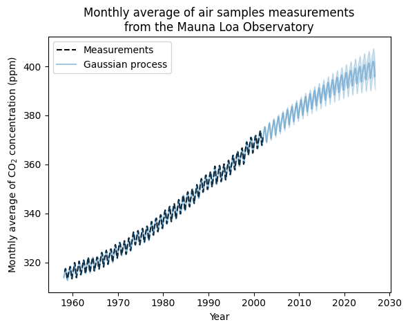
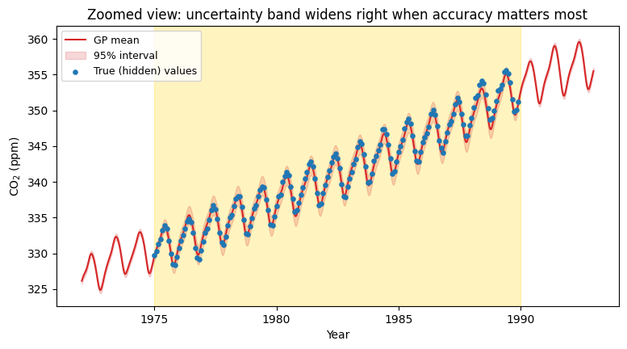
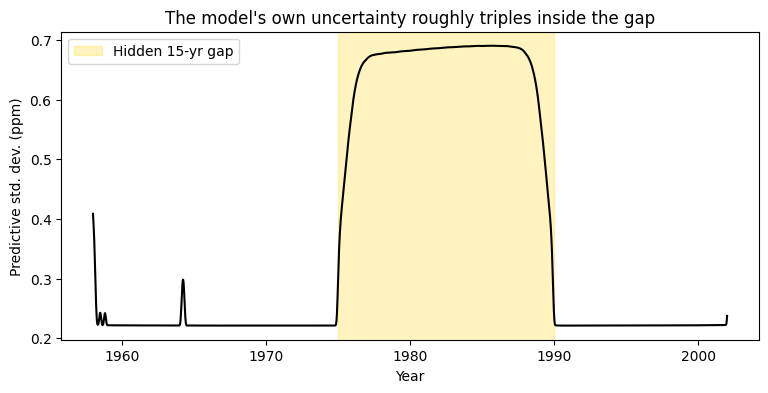

This is an excerpt from Gaussian Processes for Machine Learning. It breaks down kernel engineering and hyperparameter optimization using gradient ascent on the log-marginal-likelihood.
The monthly data of CO2 levels at Mauna Loa spanning 1958 to 2001 provides an interesting example of kernel regression as there are a number of structures superimposed upon each other within that time span, which include a long-term trend, a year-on-year cycle, additional small peaks and troughs, and measurement errors. These structures are almost mutually exclusive, and hence require individual kernels added together.
Gaussian Process
Gaussian processes aren't restricted to fitting a curve, they look at all possible curves which may account for your data, putting together all of those curves and weighting them based on their fit to produce something new. The output from the algorithm is a prediction and a measure of certainty along the entire predicted curve. This uncertainty can be considered as part of the output, too, as a measure of confidence in the predictions made by the algorithm.
The kernel determines which curves are reasonable in the first place. Even before seeing any input data points, the kernel makes assumptions such as "close points are most likely to be similar" or "there is a pattern in here that recycles through something." The choice of kernel is a choice of belief in what the data looks like without even seeing it.
Radial Basis Function
The most common kernel, and the one everything else in this post gets compared to, is the radial basis function (RBF). A small length-scale allows the function to wiggle and change quickly; a large one forces it to stay smooth and slow-moving, since points far apart are still treated as meaningfully connected.
The math behind it
Why does a big length-scale keep the curve smooth? The RBF kernel is defined as:
$$k(x, x') = \sigma^2 \exp\left(-\frac{(x-x')^2}{2\ell^2}\right)$$$k(x, x')$ is just a number saying how tightly linked two points are: high means "these move together," near zero means "unrelated." That number depends only on how far apart $x$ and $x'$ are relative to $\ell$: when they're close relative to $\ell$, the exponent stays near 0 and $k(x,x')$ stays near its max; when they're far apart relative to $\ell$, the exponent turns sharply negative and $k(x,x')$ collapses toward 0.
Here's what that means concretely. Our data spans about 44 years, with $\ell = 50$. Plugging in the largest possible gap:
$$\frac{(44)^2}{2(50)^2} = \frac{1936}{5000} \approx 0.387 \quad\Rightarrow\quad \exp(-0.387) \approx 0.68$$Even the two most distant points in the entire dataset still keep about 68% of their maximum possible connection, the length-scale is large enough that the model treats the whole 44 years as one connected story, which is exactly why the fitted trend is one smooth climb rather than something that wiggles or reverses.
There is a long term rising trend to the data, the dips we see are seasonal changes captured in the data and smaller changes or irregularities. We need to pick a kernel based on everything that we have assumed about the dataset. These patterns seem independent so 1 kernel cannot do all the work. We will handle each of these separately and take the sum at the end.
1. Long term rising trend can be fitted using a radial basis function (RBF) kernel with the length scale parameter as 50. A length-scale that large means points decades apart are still treated as related, so there's no room for the curve to zigzag. This approach will ensure this component to be smooth. The length-scale and the amplitude are hyperparameters, they are the degrees of freedom the optimiser will tune when it fits the model.
The seasonal cycle
2. A purely periodic kernel will force it to look like the same pattern is present every year forever which is not true as we can see. We handle this by multiplying the RBF so the pattern will still repeat every year but its allowed to change its shape over the years. This seasonal variation is captured by the periodic exponential sine squared kernel with a fixed periodicity of 1 year. Here the RBF's length scale controls the decay time and is another free parameter which is separate from the periodic kernel's own length scale, which controls the shape of each yearly wave. This is also known as the locally periodic kernel.
The irregularities
3. The smaller irregularities can be explained by a rational quadratic kernel component. The rational quadratic kernel is different to the RBF kernel because it explains several length-scales and will accommodate more and different irregularities. The alpha controls how much mixing happens so a smaller alpha means blending a wide spread of length scales and a large alpha will make it collapse towards behaving like a single length RBF. We take a mixture because some irregularities are short and some stretch out for longer.
The noise
The noise in the dataset comes in two different forms, and one kernel can't explain both. Some of it is correlated over short stretches, local weather patterns nudging several consecutive readings in the same direction for a few weeks and that gets picked up by an RBF kernel with a small length-scale. The rest is plain white noise, with no relationship from one point to the next, which the WhiteKernel accounts for. The relative amplitudes and the RBF's length-scale are further free parameters, so the model captures both the correlated changes and the pure randomness.

Ouput
After fitting: the trend's length-scale lands at 51.6 years, longer than the dataset itself, meaning the model sees one uninterrupted climb. The seasonal decay length comes out around 91.5 years, more than double the data's span so the yearly cycle barely drifts at all. The irregularities and noise terms are all small next to those two, meaning the structural kernels are explaining almost all the real variation, with little left over as unexplained randomness.
Where it breaks: a 15-year gap
Hiding 15 years of data (1975–1990) and refitting shows something worth noting: the mean prediction stays fairly accurate (about 0.38 ppm average error), but the model's own uncertainty roughly triples inside the gap. The trend and seasonal kernels are strong enough priors to coast through missing years on structure alone but a much longer gap, or a less steady trend, would eventually break the prediction itself, not just the confidence.


The model's own uncertainty roughly triples inside the gap, then drops right back down the moment real data resumes.
